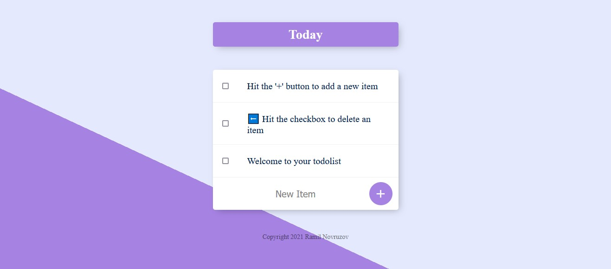

To-Do List
Webseite
Technologien:
- HTML
- CSS
- Bootstrap
- JavaScript
- Node.js
- npm
- EJS
- MongoDB
Das ist eine schöne To-Do-Liste. Sie können Ihre Aufgabenlistenelemente abhaken und neue Elemente hinzufügen oder löschen.
Während der Arbeit an dem Projekt habe ich folgendes gelernt:
- → EJS Templates
- → The Concept of Scope in JavaScript
- → Node Module Exports
- → Lodash
- → Rendering Database Items in the To-Do List App
To-Do List → Webseite anschauen